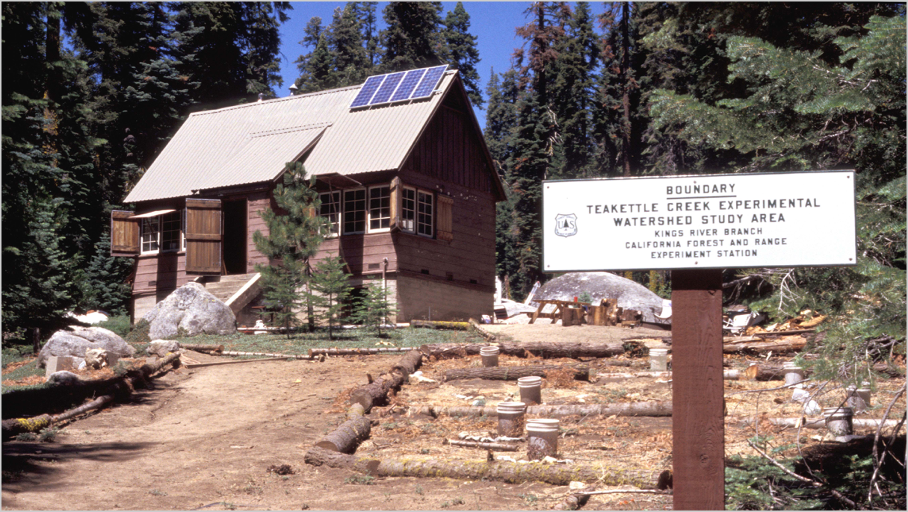

The Teakettle forest
The forest is 1300 hectares of mixed-conifer located 50 miles east of Fresno, California between Yosemite and Kings Canyon National Parks. Teakettle is an old growth forest ranging in elevation from 1980 to 2590 m. Five major tree species dominate the lower elevational structure of the forest: white fir (Abies concolor), red fir (A. magnifica), Jeffrey pine (Pinus jeffreyi), sugar pine (P. lambertiana), and incense cedar (Calocedrus decurrens) while the structure grades to red fir, lodgepole pine (P. contorta), and western white pine (P. monticola) at higher elevation.
History of the Teakettle experiment
Originally established in the 1930s to assess ways in which to increase water supply to the Californian Central Valley, Teakettle Experimental Forest has blossomed into a haven for researchers wishing to understand complex dynamics of Sierran forests. Revitalized by Malcolm North in the 1990s, experiments at Teakettle began to examine the effects of prescription fire and thinning on ecosystem structure and function. Specifically, these questions arose from remarks within the Sierra Nevada Ecosystem Project Report (pp. 4-5):
“Although silvicultural treatments can mimic the effects of fire on structural patterns of woody vegetation, virtually no data exist on the ability to mimic ecological functions of natural fire. Silvicultural treatments can create patterns of woody vegetation that appear similar to those that fire would create, but the consequences for nutrient cycling, hydrology, seed scarification, non-woody vegetation response, plant diversity, disease and insect infestation, and genetic diversity are mostly unknown.”
Teakettle has allowed scientists from widely different fields to compare results and better understand holistic ecosystem processes. The work coming from Teakettle has been instrumental in informing the management and policy of these western forests. To date, over 65 studies using or reviewing data from Teakettle have been published in scientific journals with plans to continue experimentation into the foreseen future.
Teakettle video: Fire and forest health
Reflecting goals of public outreach and management influence, the Teakettle video is a great introduction to the forest, 20th century forest policy, affiliated scientists, and initial results from the experiment.
My work at Teakettle
For more on my work at Teakettle, and about the effects of fire in western North American forests, see my research page.


{kind=link}
{kind=link}